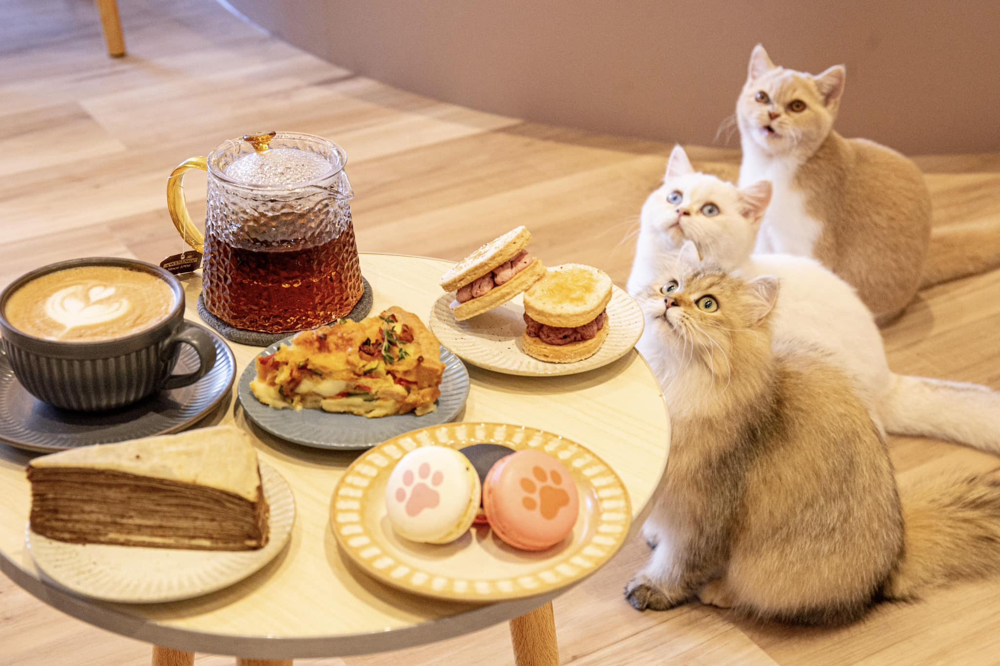

活動亮點

貓咪互動時光
與溫柔可愛的貓咪近距離相處

咖啡飲品享用
在貓咪陪伴下品嚐香醇咖啡
養貓知識分享
學習正確的貓咪照護方式
咖啡 × 貓咪 × 放鬆時光
「喵喵午後」是一日限定的貓咖體驗活動， 讓參與者在舒適放鬆的環境中與貓咪互動， 享用咖啡飲品，同時學習正確的貓咪照護與友善動物觀念。 歡迎所有愛貓人士一起來療癒身心。
與溫柔可愛的貓咪近距離相處
在貓咪陪伴下品嚐香醇咖啡
學習正確的貓咪照護方式
| 活動日期 | 2025 / 01 / 10（五） |
|---|---|
| 活動時間 | 12:00 – 18:00 |
| 活動地點 | 淡江大學 校園活動中心 |
| 主辦單位 | 淡江大學 動物關懷社 |
| 合作單位 | 在地貓咪中途之家 |
| 參加對象 | 全校師生與一般民眾 |